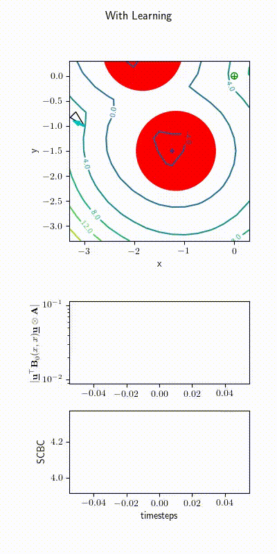
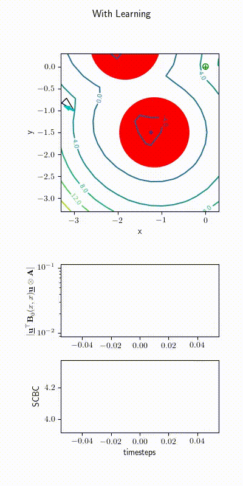

1. M. Khojasteh, V. Dhiman, M. Franceschetti, N. Atanasov.
Probabilistic Safety Constraints for Learned High Relative Degree System Dynamics
.
In Learning for Dynamics and Control, PMLR 120:781-792, 2020.
@InProceedings{pmlr-v120-khojasteh20a,
title = {Probabilistic Safety Constraints for Learned High Relative Degree System Dynamics},
author = {Khojasteh, Mohammad Javad and Dhiman, Vikas and Franceschetti, Massimo and Atanasov, Nikolay},
booktitle = {Learning for Dynamics and Control},
pages = {781--792},
year = {2020},
volume = {120},
series = {Proceedings of Machine Learning Research},
address = {The Cloud},
month = {10--11 Jun},
publisher = {PMLR},
pdf = {http://proceedings.mlr.press/v120/khojasteh20a/khojasteh20a.pdf},
url = {http://proceedings.mlr.press/v120/khojasteh20a.html},
}


 
